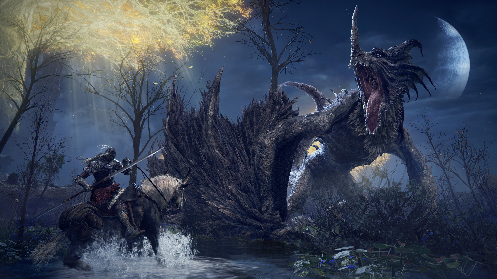
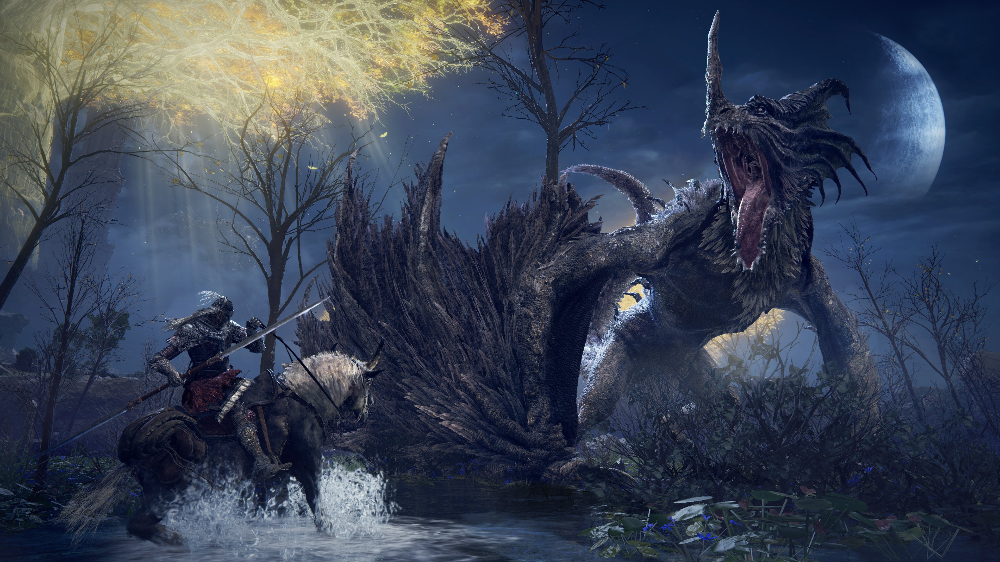

ELDEN RING
Data de Lançamento: 25/02/2022
Gêneros: RPG
Desenvolvedor: FromSoftware, Inc.
A Ordem Dourada foi quebrada.
Levante-se, Maculado, e seja guiado pela graça para brandir o poder do Elden Ring e se tornar um Elden Lord nas Terras Intermédias.
Nas Terras Intermédias, governadas pela Rainha Marika, a Eterna, o Elden Ring, a fonte da Erdtree, foi destruído.
Os descendentes de Marika, todos semideuses, reivindicaram os fragmentos do Elden Ring conhecidos como Grandes Runas, e a louca mácula de sua força recém-descoberta desencadeou uma guerra: A Ruptura. Uma guerra que significou o abandono pela Vontade Maior.
E agora a orientação da graça será levada aos Maculados que foram rejeitados pela graça do ouro e exilados das Terras Intermédias. Vós, mortos, que ainda viveis, com a graça há muito perdida, sigam o caminho para as Terras Intermédias além do mar nebuloso para ficarem diante ao Elden Ring.
E torne-se o Lorde Elden.


Jogabilidade
Jogabilidade:Domine a Arte do Combate
Domine a arte do combate com uma variedade de armas, magias e habilidades. Escolha seu estilo: seja um guerreiro ágil empunhando katanas duplas, um feiticeiro conjurando raios devastadores ou um cavaleiro imponente com armadura reluzente. A vitória exige reflexos rápidos, estratégia astuta e a coragem para encarar a morte de frente.
Bosses Colossais: Desafios Épicos
Prepare-se para duelos épicos contra semideuses enlouquecidos e criaturas grotescas. Cada boss é um teste de habilidade e perseverança, exigindo que você aprenda seus padrões de ataque, explore suas fraquezas e encontre a coragem para desferir o golpe final. A sensação de triunfo após derrotar um inimigo formidável é incomparável.
Exploração: Desvende os Segredos do Mundo
As Terras Intermediárias são um mundo vasto e misterioso, repleto de segredos e perigos. Aventure-se por planícies douradas, florestas sombrias, pântanos traiçoeiros e castelos imponentes. Descubra masmorras ocultas, encontre tesouros valiosos e desvende a história trágica do mundo. Cada canto oferece uma nova descoberta e a promessa de uma aventura inesquecível.

Maculado das terras Intermediárias
Maculado, as Terras Intermediárias, outrora abençoadas pela graça do Elden Ring, agora jazem fragmentadas e mergulhadas em caos. Explore paisagens deslumbrantes, desde planícies douradas até montanhas imponentes, cada uma guardando segredos ancestrais e ruínas de civilizações esquecidas. Descubra a história trágica do reino através de fragmentos de conhecimento e encontros com personagens enigmáticos.
Mas cuidado, Manchado, pois as Terras Intermediárias também são um campo de batalha. Semideuses enlouquecidos, guerreiros implacáveis e criaturas monstruosas vagam pela terra, disputando o poder e espalhando o caos. Prepare-se para enfrentar desafios brutais e superar obstáculos inimagináveis em sua busca pela restauração do Elden Ring e pelo título de Elden Lord.
 



Bem vindo a paisagem de Elden Ring,Maculado
- Limgrave: As planícies verdejantes e douradas de Limgrave são o ponto de partida de sua jornada. Explore ruínas antigas, cavernas escondidas e enfrente cavaleiros espectrais enquanto desvenda os segredos deste reino outrora próspero.
- Caelid: Uma terra amaldiçoada, marcada pela guerra e pela podridão escarlate. Enfrente criaturas grotescas, dragões flamejantes e a própria podridão que corrompe a terra. Aventure-se por pântanos tóxicos e castelos em ruínas em busca de respostas e redenção.
- Liurnia dos Lagos: Um lago cintilante cercado por falésias e florestas exuberantes. Descubra a Academia de Raya Lucaria, lar de feiticeiros poderosos e segredos arcanos. Navegue pelas águas traiçoeiras e desvende os mistérios que se escondem nas profundezas.
- Planalto de Altus: Uma região montanhosa imponente, lar da capital real e de imponentes muralhas. Escale picos nevados, explore fortalezas ancestrais e enfrente os desafios que aguardam aqueles que buscam alcançar a graça.
- Montanhas dos Gigantes: Uma terra gélida e inóspita, lar dos gigantes ancestrais. Atravesse nevascas implacáveis, explore cavernas congeladas e enfrente os perigos que espreitam nas sombras.
- Terras Proibidas: Uma região misteriosa e perigosa, envolta em névoa e guardada por criaturas temíveis. Desvende os segredos do passado e enfrente os desafios que aguardam aqueles que se atrevem a cruzar seus limites.